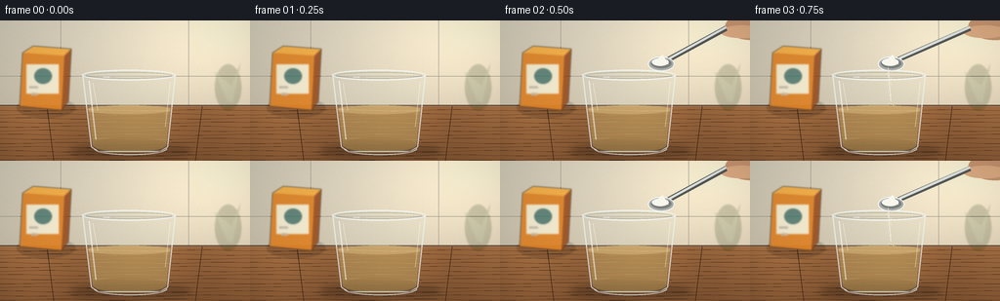
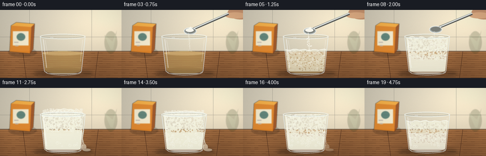

CODING AGENTS AS PIXEL WORLD MODELS
traex/GPT-5.6-Sol · material_0034
点击播放 · 原生 RGB 像素
逐轮保存的候选
回放视频、检查图与代码变化。
每份候选均可单独播放。实际图片检查记录在下方工具轨迹中。
候选 01播放与检查图
点击播放 · 原生 RGB 像素


展开代码变化
--- 上一保存版本
+++ 本次保存版本
@@ -0,0 +1,272 @@
+from pathlib import Path
+import math
+import numpy as np
+from PIL import Image, ImageDraw, ImageFilter, ImageEnhance
+import artifact_io
+
+# Deterministic, fully procedural miniature product-shot/timelapse.
+W, H, N = 256, 144, 20
+S = 4
+SW, SH = W*S, H*S
+rng = np.random.default_rng(3407)
+
+
+def sc(v): return int(round(v*S))
+def box(b): return tuple(sc(v) for v in b)
+def pts(p): return [(sc(x), sc(y)) for x,y in p]
+def clamp(x,a=0,b=1): return max(a,min(b,x))
+def smooth(a,b,x):
+ q=clamp((x-a)/(b-a))
+ return q*q*(3-2*q)
+
+# Stable bubble identities; their motion is analytical from frame time.
+bubbles=[]
+for i in range(150):
+ bubbles.append((rng.uniform(91,172), rng.uniform(0,1), rng.uniform(0.7,3.25),
+ rng.uniform(0,2*math.pi), rng.uniform(.55,1.4), rng.random()))
+foam_cells=[]
+for i in range(240):
+ foam_cells.append((rng.uniform(0,1),rng.uniform(0,1),rng.uniform(.55,2.15),rng.uniform(0,6.28),rng.random()))
+
+
+def background(frame):
+ # Warm natural-light still life, generated at final supersampled resolution.
+ yy,xx=np.mgrid[0:SH,0:SW]
+ wall=np.zeros((SH,SW,3),dtype=np.float32)
+ # tiled plaster upper half
+ upper=yy < sc(88)
+ wall[:,:,0]=214 - 20*(yy/SH) + 17*(xx/SW)
+ wall[:,:,1]=207 - 23*(yy/SH) + 14*(xx/SW)
+ wall[:,:,2]=188 - 25*(yy/SH) + 11*(xx/SW)
+ # sun glow from top right
+ glow=np.exp(-(((xx-sc(220))/sc(105))**2+((yy-sc(20))/sc(70))**2))*35
+ wall += glow[...,None]*np.array([1,.88,.62])[None,None,:]
+ # countertop begins at y=87
+ counter=~upper
+ cy=(yy-sc(87))/sc(57)
+ wall[counter,0]=np.broadcast_to(138+25*(1-cy)+7*np.sin(xx/75), (SH,SW))[counter]
+ wall[counter,1]=np.broadcast_to(91+19*(1-cy)+5*np.sin(xx/75), (SH,SW))[counter]
+ wall[counter,2]=np.broadcast_to(54+12*(1-cy)+3*np.sin(xx/75), (SH,SW))[counter]
+ # fine photographic grain, kept subtle
+ noise=np.random.default_rng(99).normal(0,1.5,(SH,SW,1))
+ wall=np.clip(wall+noise,0,255).astype(np.uint8)
+ im=Image.fromarray(wall,'RGB').convert('RGBA')
+ d=ImageDraw.Draw(im,'RGBA')
+ # grout and counter edge
+ d.line(pts([(0,57),(256,57)]), fill=(150,146,134,48), width=sc(.55))
+ d.line(pts([(62,0),(62,87)]), fill=(153,149,137,34), width=sc(.55))
+ d.line(pts([(193,0),(193,87)]), fill=(153,149,137,34), width=sc(.55))
+ d.line(pts([(0,87),(256,87)]), fill=(73,49,35,110), width=sc(1.1))
+ # wood grain, seams, and scratches
+ for j in range(13):
+ y=92+j*4.2
+ phase=j*1.7
+ p=[]
+ for x in range(0,257,8): p.append((x,y+math.sin(x/19+phase)*.7))
+ d.line(pts(p), fill=(83,48,27,18+(j%3)*5), width=sc(.45))
+ d.line(pts([(48,88),(55,144)]),fill=(73,43,27,45),width=sc(.7))
+ d.line(pts([(207,88),(200,144)]),fill=(73,43,27,42),width=sc(.7))
+ return im
+
+
+def add_background_props(im):
+ # Shallow-focus sodium bicarbonate box on the left, readable enough to establish ingredient.
+ layer=Image.new('RGBA',(SW,SH),(0,0,0,0)); d=ImageDraw.Draw(layer,'RGBA')
+ # soft cast shadow
+ d.ellipse(box((17,79,77,100)),fill=(40,24,15,50))
+ # box body and angled top
+ d.polygon(pts([(23,33),(66,36),(63,92),(20,88)]),fill=(225,132,38,235))
+ d.polygon(pts([(23,33),(34,26),(73,29),(66,36)]),fill=(246,173,65,235))
+ d.polygon(pts([(66,36),(73,29),(70,83),(63,92)]),fill=(151,72,23,220))
+ d.rectangle(box((27,45,60,75)),fill=(248,239,210,230))
+ d.ellipse(box((35,49,53,65)),fill=(76,120,111,210))
+ d.text((sc(30),sc(67)),"BAKING",fill=(77,45,27,235),stroke_width=sc(.15),stroke_fill=(255,255,255,80))
+ d.text((sc(32),sc(74)),"SODA",fill=(77,45,27,235),stroke_width=sc(.15),stroke_fill=(255,255,255,80))
+ # a plant silhouette far right
+ d.ellipse(box((220,45,247,92)),fill=(51,68,36,54))
+ d.polygon(pts([(233,83),(220,53),(237,67),(246,44),(238,84)]),fill=(52,90,48,45))
+ layer=layer.filter(ImageFilter.GaussianBlur(sc(.75)))
+ im.alpha_composite(layer)
+
+
+def draw_shadow(im, top_y):
+ layer=Image.new('RGBA',(SW,SH),(0,0,0,0)); d=ImageDraw.Draw(layer,'RGBA')
+ d.ellipse(box((72,126,195,142)),fill=(31,19,12,75))
+ d.ellipse(box((83,130,185,139)),fill=(25,15,10,70))
+ # small foam spill's wet shadow appears around peak
+ if top_y < 58:
+ a=int(clamp((58-top_y)/16)*60)
+ d.ellipse(box((167,126,192,136)),fill=(30,23,18,a))
+ layer=layer.filter(ImageFilter.GaussianBlur(sc(3.2)))
+ im.alpha_composite(layer)
+
+
+def foam_top_for_frame(f):
+ vals=[91,91,91,91,89,84,76,67,58,51,46,43,42,44,47,51,56,61,66,70]
+ return vals[f]
+
+
+def draw_cup_and_reaction(im,f):
+ t=f/(N-1)
+ top=foam_top_for_frame(f)
+ react=smooth(3.2,9.5,f)
+ peak=clamp((91-top)/49)
+ # cup interior mask, trapezoidal and rounded at bottom
+ interior=Image.new('L',(SW,SH),0); md=ImageDraw.Draw(interior)
+ md.polygon(pts([(86,56),(178,56),(170,128),(95,128)]),fill=255)
+ md.ellipse(box((95,119,170,136)),fill=255)
+
+ liquid=Image.new('RGBA',(SW,SH),(0,0,0,0)); ld=ImageDraw.Draw(liquid,'RGBA')
+ # vinegar starts clear straw-yellow, becomes cloudy with reaction.
+ cloud=react*.86
+ lc=(int(187+49*cloud),int(151+77*cloud),int(77+145*cloud),int(122+75*cloud))
+ ld.polygon(pts([(87,91),(177,91),(170,129),(95,129)]),fill=lc)
+ ld.ellipse(box((95,120,170,135)),fill=(lc[0]-8,lc[1]-9,max(0,lc[2]-8),lc[3]))
+ ld.ellipse(box((87,87,177,96)),fill=(226,194,121,145 if f<4 else 70))
+ liquid.putalpha(Image.composite(liquid.getchannel('A'),Image.new('L',(SW,SH),0),interior))
+ im.alpha_composite(liquid)
+
+ # Foam body clipped to the glass interior (when above rim, mound handled separately).
+ if f>=4:
+ foam=Image.new('RGBA',(SW,SH),(0,0,0,0)); fd=ImageDraw.Draw(foam,'RGBA')
+ # softly scalloped surface
+ xnodes=np.linspace(88,177,16)
+ surf=[]
+ for k,x in enumerate(xnodes):
+ wig=math.sin(k*1.83+f*.92)*(1.0+1.1*peak)+math.sin(k*.65+f*.4)*.55
+ surf.append((x,top+wig))
+ fd.polygon(pts(surf+[(170,130),(95,130)]),fill=(246,243,221,int(155+90*peak)))
+ fd.line(pts(surf),fill=(255,255,246,245),width=sc(1.2))
+ # cells fill top region and some lower rising gas pockets
+ for i,(ux,uy,r,ph,q) in enumerate(foam_cells):
+ y=top+2+uy*min(44,129-top)
+ # denser, larger bubbles near the top
+ x=91+ux*83 + math.sin(ph+f*.34)*.55
+ rr=r*(1.25-.55*uy)*(0.55+.65*peak)
+ if y<128 and (92+(y-56)*.04)<x<(174-(y-56)*.04):
+ col=(255,255,248,int(75+100*(1-uy)))
+ fd.ellipse(box((x-rr,y-rr,x+rr,y+rr)),fill=(245,243,223,65),outline=col,width=max(1,sc(.35)))
+ foam.putalpha(Image.composite(foam.getchannel('A'),Image.new('L',(SW,SH),0),interior))
+ im.alpha_composite(foam)
+
+ # Aerated mound above the rim at maximum expansion.
+ if top<56:
+ mound=Image.new('RGBA',(SW,SH),(0,0,0,0)); mm=ImageDraw.Draw(mound,'RGBA')
+ mound_pts=[(88,57),(88,53),(94,50),(101,49),(106,46),(113,47),(119,43),(128,44),
+ (135,41.5),(142,44),(150,43),(157,46),(166,46),(173,50),(177,56)]
+ # lower/flatten according to current top while retaining irregular cap
+ lift=(56-top)/14
+ adj=[]
+ for x,y in mound_pts:
+ adj.append((x,56-(56-y)*lift))
+ mm.polygon(pts(adj+[(177,61),(88,61)]),fill=(248,246,229,int(190+55*lift)))
+ for i,(ux,uy,r,ph,q) in enumerate(foam_cells[:90]):
+ x=91+ux*83; y=56-uy*(12*lift)+math.sin(ph+f)*.45
+ rr=r*(.7+.45*lift)
+ if y>41 and y<58:
+ mm.ellipse(box((x-rr,y-rr,x+rr,y+rr)),fill=(249,247,231,135),outline=(255,255,250,210),width=max(1,sc(.35)))
+ im.alpha_composite(mound)
+
+ # Free rising bubbles in liquid: active throughout reaction, positions cycle upward.
+ if f>=4:
+ bub=Image.new('RGBA',(SW,SH),(0,0,0,0)); bd=ImageDraw.Draw(bub,'RGBA')
+ intensity=clamp((f-3)/5)*clamp((22-f)/5)
+ for i,(x,u,r,ph,speed,q) in enumerate(bubbles):
+ if q > .18+.76*intensity: continue
+ y=124-((u*35+(f-4)*speed*6.2)%max(10,125-top))
+ y=max(top+3,y)
+ half=r*(.55+.45*intensity)
+ bd.ellipse(box((x-half,y-half,x+half,y+half)),fill=(255,251,224,20),outline=(255,255,245,165),width=max(1,sc(.38)))
+ bd.ellipse(box((x-half*.35,y-half*.55,x,y-half*.18)),fill=(255,255,255,145))
+ bub.putalpha(Image.composite(bub.getchannel('A'),Image.new('L',(SW,SH),0),interior))
+ im.alpha_composite(bub)
+
+ # Transparent glass body over the reaction: edges, base, reflections and refraction.
+ glass=Image.new('RGBA',(SW,SH),(0,0,0,0)); gd=ImageDraw.Draw(glass,'RGBA')
+ gd.polygon(pts([(84,55),(180,55),(172,130),(164,135),(101,135),(93,130)]),fill=(204,229,232,18),outline=(236,248,249,176),width=sc(1.15))
+ gd.ellipse(box((84,50.5,180,61.5)),fill=(218,238,238,13),outline=(244,251,249,215),width=sc(1.25))
+ gd.ellipse(box((88,53,176,59.5)),outline=(106,124,121,105),width=sc(.65))
+ gd.arc(box((96,125,171,138)),0,180,fill=(247,252,250,190),width=sc(1.2))
+ gd.arc(box((99,128,168,137)),5,176,fill=(89,104,101,75),width=sc(.65))
+ # vertical highlights
+ gd.line(pts([(91,62),(98,122)]),fill=(255,255,255,140),width=sc(1.5))
+ gd.line(pts([(95,64),(100,92)]),fill=(255,255,255,105),width=sc(.65))
+ gd.line(pts([(174,63),(169,109)]),fill=(255,255,255,92),width=sc(.9))
+ gd.line(pts([(106,58),(112,58)]),fill=(255,255,255,230),width=sc(.7))
+ im.alpha_composite(glass)
+
+ # Overflow/rivulet conveys the eruption at peak; fades as it settles.
+ if 9<=f<=16:
+ ov=math.sin((f-8)/9*math.pi)
+ flow=Image.new('RGBA',(SW,SH),(0,0,0,0)); od=ImageDraw.Draw(flow,'RGBA')
+ od.line(pts([(171,55),(175,65),(173,77),(176,89),(173,106),(177,122)]),fill=(244,242,223,int(185*ov)),width=sc(2.4))
+ od.ellipse(box((171,118,182,132)),fill=(245,242,222,int(150*ov)))
+ od.ellipse(box((174,128,191,134)),fill=(241,238,218,int(135*ov)),outline=(255,255,247,int(155*ov)),width=sc(.5))
+ flow=flow.filter(ImageFilter.GaussianBlur(sc(.28)))
+ im.alpha_composite(flow)
+
+
+def draw_spoon_and_powder(im,f):
+ # Spoon enters, tilts and retreats; visible powder stream precedes vigorous foaming.
+ if f<2 or f>10: return
+ # progress into scene and away
+ enter=smooth(1,3.5,f)
+ leave=smooth(7,10.5,f)
+ shift=(1-enter)*38 + leave*48
+ bowlx=140+shift; bowly=45-leave*16
+ spoon=Image.new('RGBA',(SW,SH),(0,0,0,0)); sd=ImageDraw.Draw(spoon,'RGBA')
+ # hand/fingers at top right, softly cropped
+ sd.ellipse(box((222+shift*.35,-8,277+shift*.35,20)),fill=(200,145,108,240))
+ sd.ellipse(box((217+shift*.35,5,261+shift*.35,18)),fill=(222,169,126,235))
+ sd.line(pts([(224+shift*.3,8),(bowlx+8,bowly-5)]),fill=(87,89,87,255),width=sc(5.4))
+ sd.line(pts([(224+shift*.3,6.8),(bowlx+9,bowly-6.2)]),fill=(224,229,226,245),width=sc(2.4))
+ sd.ellipse(box((bowlx-13,bowly-8,bowlx+14,bowly+7)),fill=(169,176,173,255),outline=(246,249,246,255),width=sc(1))
+ sd.ellipse(box((bowlx-10,bowly-6,bowlx+11,bowly+4)),fill=(102,108,106,210))
+ # bicarbonate mound diminishes across pour
+ amount=clamp(1-(f-3)/5)
+ if f<=7 and amount>0:
+ sd.ellipse(box((bowlx-9,bowly-6.3,bowlx+8,bowly+1.5)),fill=(250,249,239,255),outline=(255,255,255,255),width=sc(.6))
+ sd.polygon(pts([(bowlx-8,bowly-2),(bowlx+2,bowly-8-amount*2),(bowlx+8,bowly)]),fill=(252,251,241,250))
+ spoon=spoon.filter(ImageFilter.GaussianBlur(sc(.12)))
+ im.alpha_composite(spoon)
+
+ # falling powder (gravity arcs), strongest frames 3-7
+ if 3<=f<=8:
+ pour=math.sin((f-2.5)/6*math.pi)
+ pd=ImageDraw.Draw(im,'RGBA')
+ stream_x=bowlx-3
+ for j in range(38):
+ rr=np.random.default_rng(900+f*71+j)
+ y=bowly+3+rr.random()*max(3,84-bowly)
+ x=stream_x+(y-bowly)*.07+rr.normal(0,1.25+0.02*(y-bowly))
+ rad=rr.uniform(.25,1.0)*pour
+ pd.ellipse(box((x-rad,y-rad,x+rad,y+rad)),fill=(255,254,244,int(105+145*pour)))
+ pd.line(pts([(stream_x,bowly+3),(stream_x+3,83)]),fill=(250,248,235,int(60*pour)),width=sc(.55))
+
+
+def render(f):
+ top=foam_top_for_frame(f)
+ im=background(f)
+ add_background_props(im)
+ draw_shadow(im,top)
+ draw_cup_and_reaction(im,f)
+ draw_spoon_and_powder(im,f)
+ # Foreground optical finishing: downsample, vignette, mild crispness.
+ im=im.convert('RGB').resize((W,H),Image.Resampling.LANCZOS)
+ arr=np.asarray(im).astype(np.float32)
+ yy,xx=np.mgrid[0:H,0:W]
+ vign=1-0.13*np.clip(((xx-W/2)/(W*.72))**2+((yy-H/2)/(H*.82))**2,0,1)
+ arr*=vign[...,None]
+ # fixed, very subtle sensor grain prevents flat CGI surfaces without temporal sparkle
+ grain=np.random.default_rng(1200+f).normal(0,.55,(H,W,1))
+ arr=np.clip(arr+grain,0,255).astype(np.uint8)
+ return arr
+
+
+def main():
+ frames=np.stack([render(i) for i in range(N)],axis=0).astype(np.uint8)
+ artifact_io.save(frames,Path(__file__).resolve().parent)
+ print('saved',frames.shape,frames.dtype)
+
+if __name__=='__main__':
+ main()
可观测工具轨迹
实际执行的命令与返回图片。
命令 1exit 0
/bin/bash -lc "cat prompt.txt && printf '\\n---RULES---\\n' && cat GENERATION_RULES.md && printf '\\n---SPEC---\\n' && cat task_spec.json"
命令 2exit 1
/bin/bash -lc "find . -maxdepth 2 -type f -printf '%p\\n' | sort | head -200 && printf '\\nTools:\\n' && command -v ffmpeg && command -v python3 && python3 - <<'PY' mods=['PIL','cv2','numpy','imageio','moviepy','cairo'] for m in mods: try: x=__import__(m); print(m,'OK',getattr(x,'__version__','')) except Exception as e: print(m,'NO',e) PY"
命令 3exit 0
/bin/bash -lc "cat artifact_io.py; printf '\\n--- python modules ---\\n'; python3 - <<'PY' mods=['PIL','cv2','numpy','imageio','moviepy','cairo'] for m in mods: try: x=__import__(m); print(m,'OK',getattr(x,'__version__','')) except Exception as e: print(m,'NO',type(e).__name__,e) PY printf '\\n--- encoders ---\\n'; for x in ffmpeg convert magick; do command -v \""'$x" || true; done'
命令 4exit 0
/bin/bash -lc "cat > generate.py <<'PY'
from pathlib import Path
import math
import numpy as np
from PIL import Image, ImageDraw, ImageFilter, ImageEnhance
import artifact_io
# Deterministic, fully procedural miniature product-shot/timelapse.
W, H, N = 256, 144, 20
S = 4
SW, SH = W*S, H*S
rng = np.random.default_rng(3407)
def sc(v): return int(round(v*S))
def box(b): return tuple(sc(v) for v in b)
def pts(p): return [(sc(x), sc(y)) for x,y in p]
def clamp(x,a=0,b=1): return max(a,min(b,x))
def smooth(a,b,x):
q=clamp((x-a)/(b-a))
return q*q*(3-2*q)
# Stable bubble identities; their motion is analytical from frame time.
bubbles=[]
for i in range(150):
bubbles.append((rng.uniform(91,172), rng.uniform(0,1), rng.uniform(0.7,3.25),
rng.uniform(0,2*math.pi), rng.uniform(.55,1.4), rng.random()))
foam_cells=[]
for i in range(240):
foam_cells.append((rng.uniform(0,1),rng.uniform(0,1),rng.uniform(.55,2.15),rng.uniform(0,6.28),rng.random()))
def background(frame):
# Warm natural-light still life, generated at final supersampled resolution.
yy,xx=np.mgrid[0:SH,0:SW]
wall=np.zeros((SH,SW,3),dtype=np.float32)
# tiled plaster upper half
upper=yy < sc(88)
wall[:,:,0]=214 - 20*(yy/SH) + 17*(xx/SW)
wall[:,:,1]=207 - 23*(yy/SH) + 14*(xx/SW)
wall[:,:,2]=188 - 25*(yy/SH) + 11*(xx/SW)
# sun glow from top right
glow=np.exp(-(((xx-sc(220))/sc(105))**2+((yy-sc(20))/sc(70))**2))*35
wall += glow[...,None]*np.array([1,.88,.62])[None,None,:]
# countertop begins at y=87
counter=~upper
cy=(yy-sc(87))/sc(57)
wall[counter,0]=np.broadcast_to(138+25*(1-cy)+7*np.sin(xx/75), (SH,SW))[counter]
wall[counter,1]=np.broadcast_to(91+19*(1-cy)+5*np.sin(xx/75), (SH,SW))[counter]
wall[counter,2]=np.broadcast_to(54+12*(1-cy)+3*np.sin(xx/75), (SH,SW))[counter]
# fine photographic grain, kept subtle
noise=np.random.default_rng(99).normal(0,1.5,(SH,SW,1))
wall=np.clip(wall+noise,0,255).astype(np.uint8)
im=Image.fromarray(wall,'RGB').convert('RGBA')
d=ImageDraw.Draw(im,'RGBA')
# grout and counter edge
d.line(pts([(0,57),(256,57)]), fill=(150,146,134,48), width=sc(.55))
d.line(pts([(62,0),(62,87)]), fill=(153,149,137,34), width=sc(.55))
d.line(pts([(193,0),(193,87)]), fill=(153,149,137,34), width=sc(.55))
d.line(pts([(0,87),(256,87)]), fill=(73,49,35,110), width=sc(1.1))
# wood grain, seams, and scratches
for j in range(13):
y=92+j*4.2
phase=j*1.7
p=[]
for x in range(0,257,8): p.append((x,y+math.sin(x/19+phase)*.7))
d.line(pts(p), fill=(83,48,27,18+(j%3)*5), width=sc(.45))
d.line(pts([(48,88),(55,144)]),fill=(73,43,27,45),width=sc(.7))
d.line(pts([(207,88),(200,144)]),fill=(73,43,27,42),width=sc(.7))
return im
def add_background_props(im):
# Shallow-focus sodium bicarbonate box on the left, readable enough to establish ingredient.
layer=Image.new('RGBA',(SW,SH),(0,0,0,0)); d=ImageDraw.Draw(layer,'RGBA')
# soft cast shadow
d.ellipse(box((17,79,77,100)),fill=(40,24,15,50))
# box body and angled top
d.polygon(pts([(23,33),(66,36),(63,92),(20,88)]),fill=(225,132,38,235))
d.polygon(pts([(23,33),(34,26),(73,29),(66,36)]),fill=(246,173,65,235))
d.polygon(pts([(66,36),(73,29),(70,83),(63,92)]),fill=(151,72,23,220))
d.rectangle(box((27,45,60,75)),fill=(248,239,210,230))
d.ellipse(box((35,49,53,65)),fill=(76,120,111,210))
d.text((sc(30),sc(67)),\"BAKING\",fill=(77,45,27,235),stroke_width=sc(.15),stroke_fill=(255,255,255,80))
d.text((sc(32),sc(74)),\"SODA\",fill=(77,45,27,235),stroke_width=sc(.15),stroke_fill=(255,255,255,80))
# a plant silhouette far right
d.ellipse(box((220,45,247,92)),fill=(51,68,36,54))
d.polygon(pts([(233,83),(220,53),(237,67),(246,44),(238,84)]),fill=(52,90,48,45))
layer=layer.filter(ImageFilter.GaussianBlur(sc(.75)))
im.alpha_composite(layer)
def draw_shadow(im, top_y):
layer=Image.new('RGBA',(SW,SH),(0,0,0,0)); d=ImageDraw.Draw(layer,'RGBA')
d.ellipse(box((72,126,195,142)),fill=(31,19,12,75))
d.ellipse(box((83,130,185,139)),fill=(25,15,10,70))
# small foam spill's wet shadow appears around peak
if top_y < 58:
a=int(clamp((58-top_y)/16)*60)
d.ellipse(box((167,126,192,136)),fill=(30,23,18,a))
layer=layer.filter(ImageFilter.GaussianBlur(sc(3.2)))
im.alpha_composite(layer)
def foam_top_for_frame(f):
vals=[91,91,91,91,89,84,76,67,58,51,46,43,42,44,47,51,56,61,66,70]
return vals[f]
def draw_cup_and_reaction(im,f):
t=f/(N-1)
top=foam_top_for_frame(f)
react=smooth(3.2,9.5,f)
peak=clamp((91-top)/49)
# cup interior mask, trapezoidal and rounded at bottom
interior=Image.new('L',(SW,SH),0); md=ImageDraw.Draw(interior)
md.polygon(pts([(86,56),(178,56),(170,128),(95,128)]),fill=255)
md.ellipse(box((95,119,170,136)),fill=255)
liquid=Image.new('RGBA',(SW,SH),(0,0,0,0)); ld=ImageDraw.Draw(liquid,'RGBA')
# vinegar starts clear straw-yellow, becomes cloudy with reaction.
cloud=react*.86
lc=(int(187+49*cloud),int(151+77*cloud),int(77+145*cloud),int(122+75*cloud))
ld.polygon(pts([(87,91),(177,91),(170,129),(95,129)]),fill=lc)
ld.ellipse(box((95,120,170,135)),fill=(lc[0]-8,lc[1]-9,max(0,lc[2]-8),lc[3]))
ld.ellipse(box((87,87,177,96)),fill=(226,194,121,145 if f<4 else 70))
liquid.putalpha(Image.composite(liquid.getchannel('A'),Image.new('L',(SW,SH),0),interior))
im.alpha_composite(liquid)
# Foam body clipped to the glass interior (when above rim, mound handled separately).
if f>=4:
foam=Image.new('RGBA',(SW,SH),(0,0,0,0)); fd=ImageDraw.Draw(foam,'RGBA')
# softly scalloped surface
xnodes=np.linspace(88,177,16)
surf=[]
for k,x in enumerate(xnodes):
wig=math.sin(k*1.83+f*.92)*(1.0+1.1*peak)+math.sin(k*.65+f*.4)*.55
surf.append((x,top+wig))
fd.polygon(pts(surf+[(170,130),(95,130)]),fill=(246,243,221,int(155+90*peak)))
fd.line(pts(surf),fill=(255,255,246,245),width=sc(1.2))
# cells fill top region and some lower rising gas pockets
for i,(ux,uy,r,ph,q) in enumerate(foam_cells):
y=top+2+uy*min(44,129-top)
# denser, larger bubbles near the top
x=91+ux*83 + math.sin(ph+f*.34)*.55
rr=r*(1.25-.55*uy)*(0.55+.65*peak)
if y<128 and (92+(y-56)*.04)<x<(174-(y-56)*.04):
col=(255,255,248,int(75+100*(1-uy)))
fd.ellipse(box((x-rr,y-rr,x+rr,y+rr)),fill=(245,243,223,65),outline=col,width=max(1,sc(.35)))
foam.putalpha(Image.composite(foam.getchannel('A'),Image.new('L',(SW,SH),0),interior))
im.alpha_composite(foam)
# Aerated mound above the rim at maximum expansion.
if top<56:
mound=Image.new('RGBA',(SW,SH),(0,0,0,0)); mm=ImageDraw.Draw(mound,'RGBA')
mound_pts=[(88,57),(88,53),(94,50),(101,49),(106,46),(113,47),(119,43),(128,44),
(135,41.5),(142,44),(150,43),(157,46),(166,46),(173,50),(177,56)]
# lower/flatten according to current top while retaining irregular cap
lift=(56-top)/14
adj=[]
for x,y in mound_pts:
adj.append((x,56-(56-y)*lift))
mm.polygon(pts(adj+[(177,61),(88,61)]),fill=(248,246,229,int(190+55*lift)))
for i,(ux,uy,r,ph,q) in enumerate(foam_cells[:90]):
x=91+ux*83; y=56-uy*(12*lift)+math.sin(ph+f)*.45
rr=r*(.7+.45*lift)
if y>41 and y<58:
mm.ellipse(box((x-rr,y-rr,x+rr,y+rr)),fill=(249,247,231,135),outline=(255,255,250,210),width=max(1,sc(.35)))
im.alpha_composite(mound)
# Free rising bubbles in liquid: active throughout reaction, positions cycle upward.
if f>=4:
bub=Image.new('RGBA',(SW,SH),(0,0,0,0)); bd=ImageDraw.Draw(bub,'RGBA')
intensity=clamp((f-3)/5)*clamp((22-f)/5)
for i,(x,u,r,ph,speed,q) in enumerate(bubbles):
if q > .18+.76*intensity: continue
y=124-((u*35+(f-4)*speed*6.2)%max(10,125-top))
y=max(top+3,y)
half=r*(.55+.45*intensity)
bd.ellipse(box((x-half,y-half,x+half,y+half)),fill=(255,251,224,20),outline=(255,255,245,165),width=max(1,sc(.38)))
bd.ellipse(box((x-half*.35,y-half*.55,x,y-half*.18)),fill=(255,255,255,145))
bub.putalpha(Image.composite(bub.getchannel('A'),Image.new('L',(SW,SH),0),interior))
im.alpha_composite(bub)
# Transparent glass body over the reaction: edges, base, reflections and refraction.
glass=Image.new('RGBA',(SW,SH),(0,0,0,0)); gd=ImageDraw.Draw(glass,'RGBA')
gd.polygon(pts([(84,55),(180,55),(172,130),(164,135),(101,135),(93,130)]),fill=(204,229,232,18),outline=(236,248,249,176),width=sc(1.15))
gd.ellipse(box((84,50.5,180,61.5)),fill=(218,238,238,13),outline=(244,251,249,215),width=sc(1.25))
gd.ellipse(box((88,53,176,59.5)),outline=(106,124,121,105),width=sc(.65))
gd.arc(box((96,125,171,138)),0,180,fill=(247,252,250,190),width=sc(1.2))
gd.arc(box((99,128,168,137)),5,176,fill=(89,104,101,75),width=sc(.65))
# vertical highlights
gd.line(pts([(91,62),(98,122)]),fill=(255,255,255,140),width=sc(1.5))
gd.line(pts([(95,64),(100,92)]),fill=(255,255,255,105),width=sc(.65))
gd.line(pts([(174,63),(169,109)]),fill=(255,255,255,92),width=sc(.9))
gd.line(pts([(106,58),(112,58)]),fill=(255,255,255,230),width=sc(.7))
im.alpha_composite(glass)
# Overflow/rivulet conveys the eruption at peak; fades as it settles.
if 9<=f<=16:
ov=math.sin((f-8)/9*math.pi)
flow=Image.new('RGBA',(SW,SH),(0,0,0,0)); od=ImageDraw.Draw(flow,'RGBA')
od.line(pts([(171,55),(175,65),(173,77),(176,89),(173,106),(177,122)]),fill=(244,242,223,int(185*ov)),width=sc(2.4))
od.ellipse(box((171,118,182,132)),fill=(245,242,222,int(150*ov)))
od.ellipse(box((174,128,191,134)),fill=(241,238,218,int(135*ov)),outline=(255,255,247,int(155*ov)),width=sc(.5))
flow=flow.filter(ImageFilter.GaussianBlur(sc(.28)))
im.alpha_composite(flow)
def draw_spoon_and_powder(im,f):
# Spoon enters, tilts and retreats; visible powder stream precedes vigorous foaming.
if f<2 or f>10: return
# progress into scene and away
enter=smooth(1,3.5,f)
leave=smooth(7,10.5,f)
shift=(1-enter)*38 + leave*48
bowlx=140+shift; bowly=45-leave*16
spoon=Image.new('RGBA',(SW,SH),(0,0,0,0)); sd=ImageDraw.Draw(spoon,'RGBA')
# hand/fingers at top right, softly cropped
sd.ellipse(box((222+shift*.35,-8,277+shift*.35,20)),fill=(200,145,108,240))
sd.ellipse(box((217+shift*.35,5,261+shift*.35,18)),fill=(222,169,126,235))
sd.line(pts([(224+shift*.3,8),(bowlx+8,bowly-5)]),fill=(87,89,87,255),width=sc(5.4))
sd.line(pts([(224+shift*.3,6.8),(bowlx+9,bowly-6.2)]),fill=(224,229,226,245),width=sc(2.4))
sd.ellipse(box((bowlx-13,bowly-8,bowlx+14,bowly+7)),fill=(169,176,173,255),outline=(246,249,246,255),width=sc(1))
sd.ellipse(box((bowlx-10,bowly-6,bowlx+11,bowly+4)),fill=(102,108,106,210))
# bicarbonate mound diminishes across pour
amount=clamp(1-(f-3)/5)
if f<=7 and amount>0:
sd.ellipse(box((bowlx-9,bowly-6.3,bowlx+8,bowly+1.5)),fill=(250,249,239,255),outline=(255,255,255,255),width=sc(.6))
sd.polygon(pts([(bowlx-8,bowly-2),(bowlx+2,bowly-8-amount*2),(bowlx+8,bowly)]),fill=(252,251,241,250))
spoon=spoon.filter(ImageFilter.GaussianBlur(sc(.12)))
im.alpha_composite(spoon)
# falling powder (gravity arcs), strongest frames 3-7
if 3<=f<=8:
pour=math.sin((f-2.5)/6*math.pi)
pd=ImageDraw.Draw(im,'RGBA')
stream_x=bowlx-3
for j in range(38):
rr=np.random.default_rng(900+f*71+j)
y=bowly+3+rr.random()*max(3,84-bowly)
x=stream_x+(y-bowly)*.07+rr.normal(0,1.25+0.02*(y-bowly))
rad=rr.uniform(.25,1.0)*pour
pd.ellipse(box((x-rad,y-rad,x+rad,y+rad)),fill=(255,254,244,int(105+145*pour)))
pd.line(pts([(stream_x,bowly+3),(stream_x+3,83)]),fill=(250,248,235,int(60*pour)),width=sc(.55))
def render(f):
top=foam_top_for_frame(f)
im=background(f)
add_background_props(im)
draw_shadow(im,top)
draw_cup_and_reaction(im,f)
draw_spoon_and_powder(im,f)
# Foreground optical finishing: downsample, vignette, mild crispness.
im=im.convert('RGB').resize((W,H),Image.Resampling.LANCZOS)
arr=np.asarray(im).astype(np.float32)
yy,xx=np.mgrid[0:H,0:W]
vign=1-0.13*np.clip(((xx-W/2)/(W*.72))**2+((yy-H/2)/(H*.82))**2,0,1)
arr*=vign[...,None]
# fixed, very subtle sensor grain prevents flat CGI surfaces without temporal sparkle
grain=np.random.default_rng(1200+f).normal(0,.55,(H,W,1))
arr=np.clip(arr+grain,0,255).astype(np.uint8)
return arr
def main():
frames=np.stack([render(i) for i in range(N)],axis=0).astype(np.uint8)
artifact_io.save(frames,Path(__file__).resolve().parent)
print('saved',frames.shape,frames.dtype)
if __name__=='__main__':
main()
PY
python3 generate.py"命令 5exit 0
/bin/bash -lc "python3 - <<'PY'
import numpy as np, json
from PIL import Image
p=np.load('pixels.npz')['pixels']
print('pixels',p.shape,p.dtype,'unique frame hashes',len({hash(p[:,:,i].tobytes()) for i in range(p.shape[2])}))
for f in ['generate.py','pixels.npz','inspection.png','transition_check.png','index.html']:
import os
print(f,os.path.getsize(f))
# confirm exact RGB dimensions
im=Image.open('frames/11.png'); print('frame',im.mode,im.size)
PY"视觉工具实际返回图片 1

保存候选 1 份；完成命令 5 次；可验证图片返回 1 张。原始 API 响应与完整日志保留在本地。